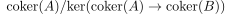
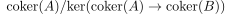

quasi-abelian category of pairs
Definition
Let be abelian categories where is a full subcategory closed under subobjects and quotient
Then the quasi-abelian category of pairs is defined as full subcategory of
where for
- the map is a monomorphism
-
-
structure
additive
inherited from
- limit functor preserves monomorphisms
- is closed under sums
- commutes with sums (so again closure of suffices)
kernel
using the Snake Lemma
for
we have that
is long exact.
So in particular is a monomorhpism.
SO it remains to show that  .
.
For that we notice that
is short exact sequence so in particular is a subobject and where lies in since it is the kernel
(cf. cutting a short exact sequence out of a long exact sequence)
In particular the kernels are computed usually
cokernel
For
we claim that the cokernel is given by
For
using cofiber in the arrow category we conclude that the quotient lies in .
Hence we only need to replace with  or 
or 
regular epi mirrored under pullback
epi
if and only if is an epi
regular epi
We claim that a morphism is a regular epi iff
- both maps are epis
- the induced square on kernels
is a pullback
regular mono mirrored under pushout
mono
- iff both maps are monomorhpisms.